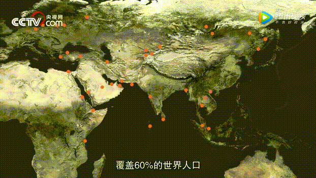
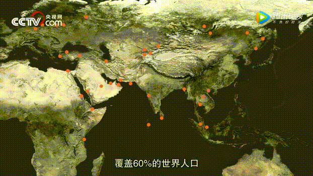

Burn it!
China
The Great Blessing of the People
and the Great Power of the Country

The Great Blessing of the People
and the Great Power of the Country
According to preliminary accounting, China's gross domestic product in the first quarter was 19878.3 billion yuan. At comparable prices, the increase was 6.8% year-on-year. This growth rate was the same as in the fourth quarter of last year. China's economic growth rate has been stable in the range of 6.7% to 6.9% for 11 consecutive quarters. In terms of sub-industries, the added value of the tertiary industry increased by 7.5%, far faster than that of the first and second industries.
In the first quarter, CPI rose 2.1% over the same period last year. Continued a mild upward trend. "Overall, prices will remain stable." The head of the Price Department of the National Development and Reform Commission said that From the point of view of market supply, China's agricultural, industrial and service-related products have relatively adequate supply capacity. The stable operation of prices has a solid foundation.
Statistics show that in the first quarter of this year, the total retail sales of consumer goods in China totaled 9027.5 billion yuan. It grew by 9.8% year on year. The contribution rate of final consumption expenditure to economic growth reached 77.8%. That's much higher than the 58.8% contribution rate for the whole year last year. The final consumption expenditure has become the first engine of China's economic growth for the fifth consecutive year.
In 2017, the proportion of service industry in China's GDP was 51.6%. The contribution rate to economic growth is 58.8%. "Our country has entered a stage of service-oriented economic development. This is an important symbol of China's economic transformation and upgrading and the result of the inherent law of economic development. It is also a result of restructuring and promoting the upgrading of various policy roles." Xing Zhihong said.
Statistics show that the number of newly registered enterprises in China reached 1.32 million in the first quarter. With an average of 14.7 million new registered enterprises per day, the number of new market players has increased substantially. "This is a very considerable increment." Xing Zhihong said that the vigorous development of mass entrepreneurship and innovation has stimulated market vitality and social creativity.
According to customs statistics, China's exports in the first quarter amounted to 3.54 trillion yuan. The growth rate was 7.4%; the import volume was 3.21 trillion yuan, an increase of 11.7%; and the trade surplus was 326.18 billion yuan, a narrowing of 21.8%. In China's foreign trade, the pursuit of trade balance is also conducive to the development of domestic economy.
From 2013 to 2016, China's GDP grew by an average of 7.2%.
This is a report card that is beyond the reach of the world. The Chinese people have more sense of gain.
The sense of security, happiness and pride has made the Chinese nation a historic leap from standing up, becoming rich to becoming strong.
New and peculiar modern bridges are reshaping the new symbols of China's economic geography and outlining a new map of China's economic efficiency.
 

The theme of today's era is peace and development. The ever-growing economic globalization has made the interests of all countries increasingly closely linked. In the process of globalization, opportunities and challenges also bring instability and uncertainty. Under such a trend, Governance and reform of the global economic system are imperative. The "one belt and one road" initiative advocated by China has responded to the needs of the times. Steady and pragmatic, promote multi-level international cooperation, and continue to contribute China's experience and model to the improvement of the global governance system.
 Xi Jinping: Full of Confidence in the Prospect of China's Economic Development
Xi Jinping: Full of Confidence in the Prospect of China's Economic Development
President Xi Jinping attended the APEC Business Leaders Summit in Bali, Indonesia, on July 7.
He also delivered an important speech entitled "Deepening Reform and Opening-up to Create a Better Asia-Pacific", emphasizing that China's economic development is in a good state.
China will adhere to the correct orientation of reform and opening up, so that reform will not stop and opening up will not stop.
we have firm confidence in the sustained and healthy development of China's economy. China will bring greater opportunities to Asia-Pacific development.
China hopes to work hand in hand with its Asia-Pacific partners to create a better Asia-Pacific that will lead the world, benefit all parties and benefit future generations.